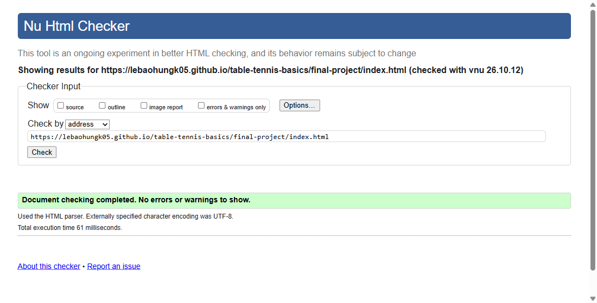
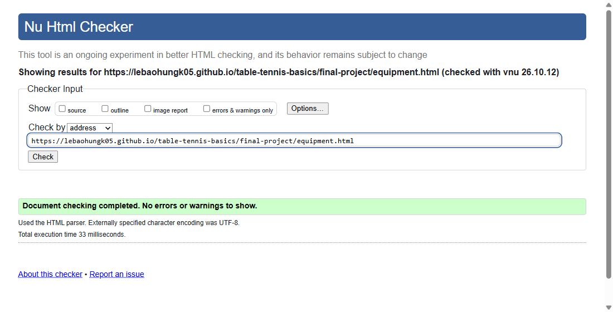
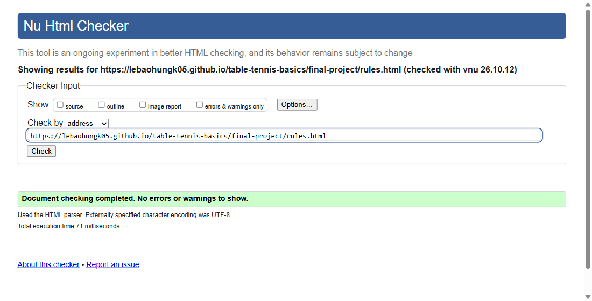
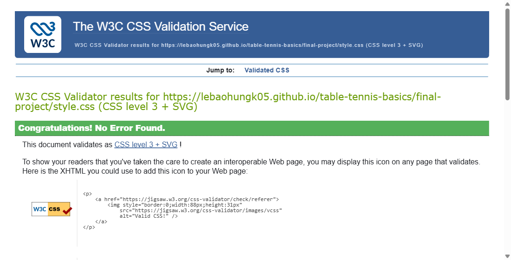

Table Tennis Central is a three page informational site about table tennis. It explains why the sport is
worth playing, what equipment a beginner needs, and how a match is scored. Every illustration on the site is
an original SVG drawn for this project.
Serve, scoring and expedite sections with diagrams, rally-call table, common faults
4
2. W3C Validator Compliance
Each page was checked by address on the W3C Nu Html Checker, and
the stylesheet on the W3C CSS Validation Service. All four
report zero errors and zero warnings. The screenshots below are the validators' own result pages for the
live URLs.

index.html — no errors or warnings

equipment.html — no errors or warnings

rules.html — no errors or warnings

style.css — “Congratulations! No Error Found.”
As an extra accessibility check, all three pages were also run through the axe-core 4.10.2 engine (the
engine behind the aXe browser extension), which reported 0 violations on every page.
3. Responsive Design
The layout is mobile-first. On narrow screens the text sections stack in one column and the gallery shows two
cards per row. A single media query at 720px widens the gallery to three columns and puts the text and the
fact list side by side. The navigation uses flex-wrap, so its links reflow by themselves on small
screens. None of the three widths below produce horizontal scrolling.
All three pages share one external stylesheet, linked from each page with
<link rel="stylesheet" href="style.css">. The design uses a fixed five-colour palette taken
from a table tennis venue: court green, table blue, paddle red, ball yellow and a warm off-white background.
#0b3d2e court green
#12527f table blue
#c8102e paddle red
#f6c453 ball yellow
#f4f1e8 background
Colour contrast of the text pairs used (WCAG AA needs 4.5:1 for body text)
Text / background
Where
Ratio
#f4f1e8 on #0b3d2e
Header, nav, footer
10.8 : 1
#0b3d2e on #f6c453
Nav hover, skip link
7.6 : 1
#12527f on #f4f1e8
Body links
7.2 : 1
#c8102e on #f4f1e8
Link hover
5.2 : 1
Typography and the box model
Headings use Georgia for a classic sports-programme feel, and body text uses Segoe UI at 18px with a 1.7
line height so paragraphs stay easy to read. Every content image is framed with the box model: padding gives
it a white mat, a border outlines it, and border-radius rounds the corners.
Beyond the base requirements, the site adds these four features.
1 Skip to Main Content link
The first element in every page is a link that jumps keyboard and screen-reader users straight past the
header and navigation. It is moved off screen with position: absolute and slides into view only
when it receives keyboard focus. The screenshot was taken right after pressing Tab once.
Interactive elements respond with short transitions instead of instant jumps. Navigation links lift and
change to yellow, gallery cards rise and gain a shadow, and the “Why Play?” cards tilt slightly.
The navigation effect is attached to :focus as well as :hover, so keyboard users
see it too.
Grid handles the two-dimensional layouts: the photo galleries and the text-plus-facts split. Flexbox
handles the one-dimensional rows: the navigation bar and the card rows. Both use gap for
spacing, so the layout needs no float hacks or margin tricks.
Instead of adding a class to every element, nth-child patterns give repeated items
alternating styles. Gallery images alternate between arch and bowl shapes in red and blue. Cards rotate
through three accent colours with 3n + 1, 3n + 2 and 3n + 3. Fact
lists and table rows get zebra striping.